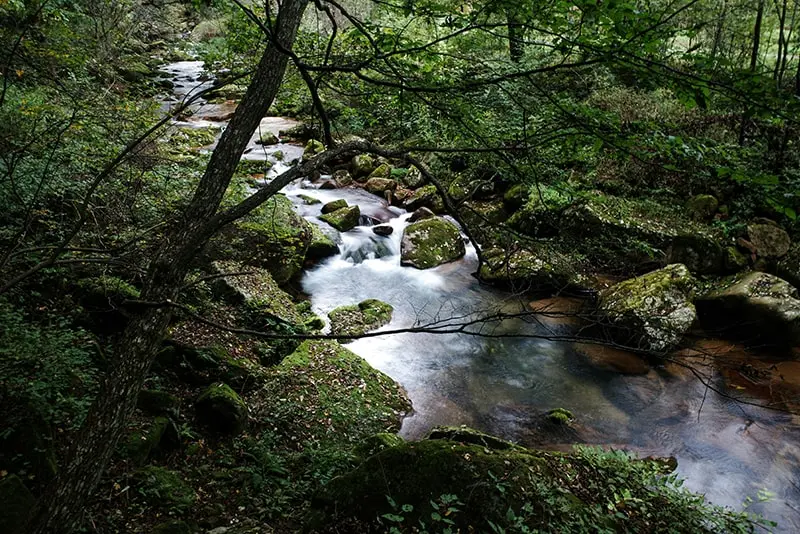

Licenciatura en Ciencias Ambientales
Descripción del Programa
El programa de Ciencias Ambientales explora la interacción entre los seres humanos y el mundo natural. Los estudiantes adquieren un profundo entendimiento de los sistemas ecológicos, prácticas de sostenibilidad y la ciencia detrás de los desafíos y soluciones ambientales.
Lo Que Aprenderás
- Ecología y Biodiversidad
- Políticas Ambientales y Ética
- Cambio Climático y Sostenibilidad
- Sistemas de Información Geográfica (SIG)
- Gestión de la Calidad del Agua, Suelo y Aire
Oportunidades Laborales
Los graduados pueden trabajar como:
- Consultores Ambientales
- Científicos de Vida Silvestre o Conservación
- Analistas de Políticas Ambientales
- Coordinadores de Sostenibilidad
- Investigadores de Campo Ecológico
Trabajo de Campo e Investigación
Los estudiantes participan en trabajo de campo al aire libre, investigación en laboratorio y evaluaciones de impacto ambiental, preparándolos para resolver problemas ambientales del mundo real.

Detalles del Programa
- Título: Lic. en Ciencias Ambientales
- Duración: 4 Años
- Modalidad: Presencial / Híbrida
- Créditos: 120
- Idioma: Inglés
- Fechas de Inicio: Septiembre / Enero